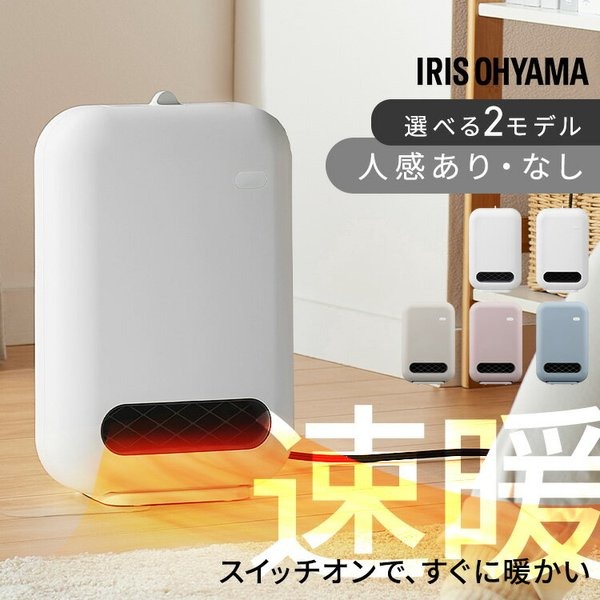
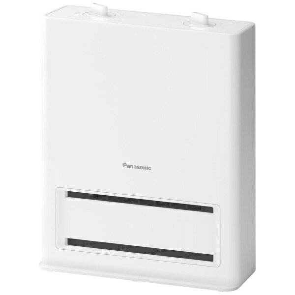
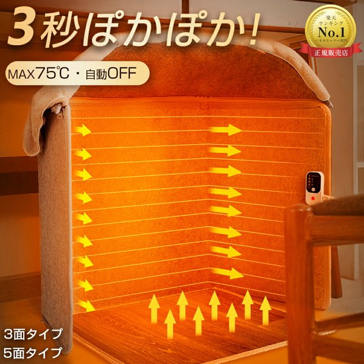
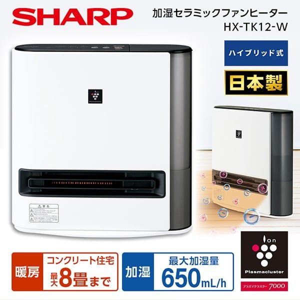
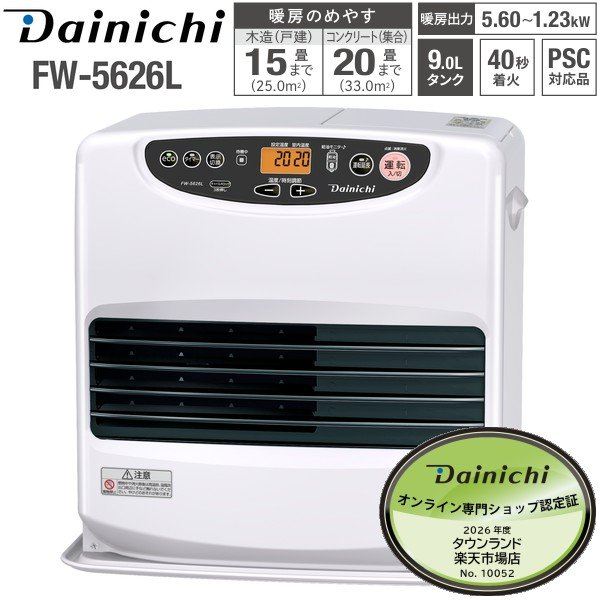
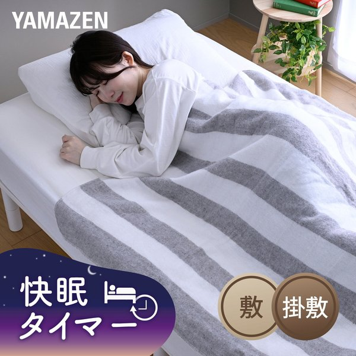
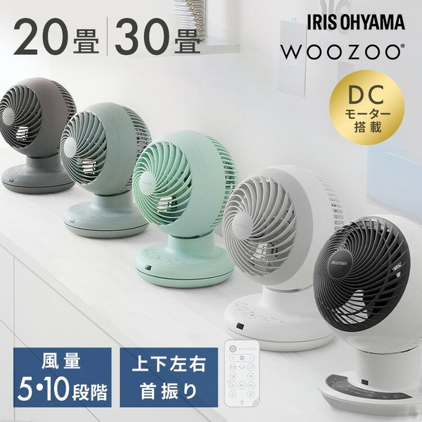
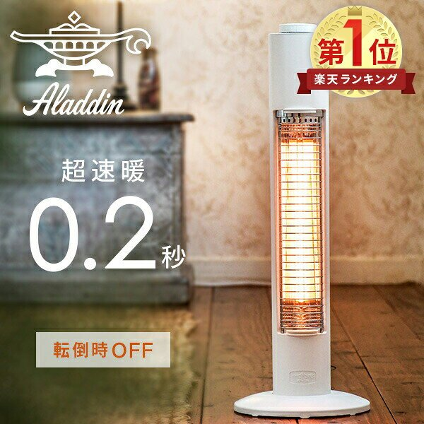
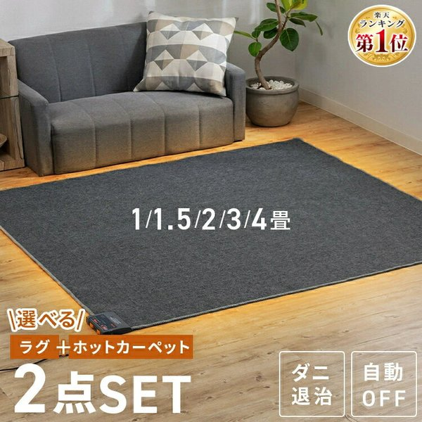
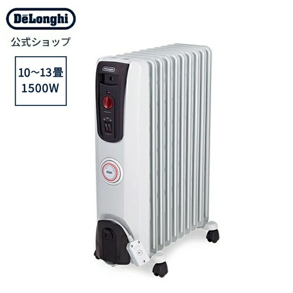

【2026年最新】電気代を抑えて冬を乗り切る！省エネ暖房家電＆デスク下パネルヒーターおすすめ10選
電気代の値上がりが続くなか、冬の暖房をどう乗り切るかは毎年の悩みどころ。部屋全体を暖めるエアコンと、足元だけを暖めるスポット暖房を上手に使い分けるのが、光熱費を抑える近道です。
今年は「人感センサーで自動オフ」「消費電力400W」「遠赤外線で空気を乾かさない」など、省エネを意識したモデルが充実しています。置く場所と使い方に合わせて選べば、暖かさを我慢せずに電気代を下げられます。
本記事では、実際に楽天市場で人気・高評価の省エネ暖房家電とデスク下パネルヒーター10選を、価格・評価・向いている使い方つきで写真付き紹介します。
- おすすめ10選 スペック・特徴比較表
- BEST 1｜セラミックファンヒーター 人感センサー搭載 ACHシリーズ
- BEST 2｜セラミックファンヒーター ウォームホワイト DS-FAS1200-W
- BEST 3｜遠赤外線パネルヒーター 足元タイプ 自動OFF付き
- BEST 4｜加湿セラミックファンヒーター プラズマクラスター搭載 HX-TK12-W
- BEST 5｜石油ファンヒーター 9L大容量タンク L TYPE 2026年モデル FW-5626L-W
- BEST 6｜掛け敷き兼用 電気毛布 丸洗いOK
- BEST 7｜サーキュレーター DCモーター リモコン付き PCF-BD15BTEC
- BEST 8｜遠赤グラファイトヒーター AEH-G426D
- BEST 9｜ホットカーペット 本体＋ラグセット 3畳まで選択可
- BEST 10｜オイルヒーター サーマルカットフィン 1500W H771015EFSN-BK
- 【読者限定】無料体験キャンペーン
- まとめ：生活をラクにする最初の一歩
| 順位 | 商品名 | ブランド | 最大の特徴・おすすめ理由 | 総合評価 |
|---|---|---|---|---|
| BEST 1 | セラミックファンヒーター 人感センサー搭載 ACHシリーズ | アイリスオーヤマ | 人感センサーがムダな運転をカット | 4.35 ★ |
| BEST 2 | セラミックファンヒーター ウォームホワイト DS-FAS1200-W | パナソニック | 幅を取らないスリムボディ | 5.00 ★ |
| BEST 3 | 遠赤外線パネルヒーター 足元タイプ 自動OFF付き | パネルヒーター（5面・3面タイプ） | 足元を囲う5面タイプで暖かさが逃げない | 4.42 ★ |
| BEST 4 | 加湿セラミックファンヒーター プラズマクラスター搭載 HX-TK12-W | シャープ | 加湿＋暖房を1台に集約 | 4.54 ★ |
| BEST 5 | 石油ファンヒーター 9L大容量タンク L TYPE 2026年モデル FW-5626L-W | ダイニチ（DAINICHI） | 木造15畳までパワフルに暖める | 4.52 ★ |
| BEST 6 | 掛け敷き兼用 電気毛布 丸洗いOK | 山善（YAMAZEN） | 掛け・敷きの両方で使える | 4.34 ★ |
| BEST 7 | サーキュレーター DCモーター リモコン付き PCF-BD15BTEC | アイリスオーヤマ（WOOZOO） | DCモーターで静音・省電力 | 4.45 ★ |
| BEST 8 | 遠赤グラファイトヒーター AEH-G426D | アラジン（Aladdin） | 0.2秒で立ち上がる速暖性 | 4.52 ★ |
| BEST 9 | ホットカーペット 本体＋ラグセット 3畳まで選択可 | テクノス（TEKNOS） | 畳数に合わせてサイズを選べる | 4.34 ★ |
| BEST 10 | オイルヒーター サーマルカットフィン 1500W H771015EFSN-BK | デロンギ（De'Longhi） | 乾燥しにくく空気も汚さない | 4.37 ★ |
セラミックファンヒーター 人感センサー搭載 ACHシリーズ

人の動きをセンサーが察知して、自動で運転を入/切してくれるセラミックファンヒーター。つけっぱなしのムダを減らせるので、電気代が気になる冬にうれしい一台です。卓上サイズでデスクの足元にもすっぽり収まります。 楽天市場での実売価格は約4,980円（2026年11月時点）。
- 人感センサーがムダな運転をカット
- 卓上に置けるコンパクトサイズ
- 転倒時自動オフで安心
- 部屋全体を暖めるには力不足
セラミックファンヒーター ウォームホワイト DS-FAS1200-W

縦長スリムで置き場所を選ばないパナソニックのセラミックファンヒーター。ボタン一つで迷わず使えるシンプル設計で、脱衣所や寝室のスポット暖房に向いています。 楽天市場での実売価格は約9,860円（2026年11月時点）。
- 幅を取らないスリムボディ
- 操作がシンプルで家族も使いやすい
- 国内大手メーカーの安心感
- レビュー数はまだ少なめ
遠赤外線パネルヒーター 足元タイプ 自動OFF付き

デスクの足元をパネルで囲い込むタイプのパネルヒーター。遠赤外線で足元をじんわり暖め、空気を乾燥させにくいのが特長です。消費電力が小さめなので、一日中つけていても電気代が膨らみにくいのが魅力。 楽天市場での実売価格は約3,980円（2026年11月時点）。
- 足元を囲う5面タイプで暖かさが逃げない
- 遠赤外線で空気が乾きにくい
- 自動OFF・PSE認証で安全面も安心
- 部屋全体を暖める用途には向かない
加湿セラミックファンヒーター プラズマクラスター搭載 HX-TK12-W

暖房と加湿を1台でまかなえるハイブリッド式。プラズマクラスター搭載で、暖房で乾きがちな空気もケアできます。木造6畳／鉄筋8畳まで対応の日本製モデルです。 楽天市場での実売価格は約24,800円（2026年11月時点）。
- 加湿＋暖房を1台に集約
- プラズマクラスターで空気をケア
- 日本製で長く使える
- 本体価格が2万円台と高め
石油ファンヒーター 9L大容量タンク L TYPE 2026年モデル FW-5626L-W

石油ファンヒーターは燃料代と電気代の合計で見ると、電気暖房より安く済むことが多い方式です。木造15畳／コンクリート20畳まで暖められるパワーがありながら、9L大容量タンクで給油の回数は少なめ。リビングのメイン暖房に向いています。 楽天市場での実売価格は約27,698円（2026年11月時点）。
- 木造15畳までパワフルに暖める
- 9Lタンクで給油回数が少ない
- 2026年モデルで燃費性能も向上
- 灯油の買い出しと給油の手間はかかる
掛け敷き兼用 電気毛布 丸洗いOK

1枚で掛け毛布としても、敷きパッドとしても使える電気毛布。丸洗いできるのでダニ対策にもなり、温度調節とタイマー付きで寝るときも安心です。暖房の設定温度を1〜2度下げても眠れるため、電気代の節約にもつながります。 楽天市場での実売価格は約3,980円（2026年11月時点）。
- 掛け・敷きの両方で使える
- 丸洗いできて清潔に保てる
- タイマー付きで就寝時も安心
- 洗濯後は乾くまでに時間がかかる
サーキュレーター DCモーター リモコン付き PCF-BD15BTEC

暖房の温風は天井に溜まりがち。サーキュレーターで撹拌すると部屋全体が均一に暖まり、エアコンの設定温度を下げられます。DCモーターで静音＆省電力なうえ、上下左右の自動首振りとリモコン付きで使い勝手も良好です。 楽天市場での実売価格は約6,930円（2026年11月時点）。
- DCモーターで静音・省電力
- 上下左右の自動首振り
- 暖房の設定温度を下げる節電効果
- これ単体では暖かくならない
遠赤グラファイトヒーター AEH-G426D

スイッチを入れてから約0.2秒で発熱する遠赤グラファイトヒーター。消費電力400Wと小さく、トイレ・洗面所・脱衣所など「短時間だけ暖めたい」場所の電気代を抑えられます。 楽天市場での実売価格は約7,480円（2026年11月時点）。
- 0.2秒で立ち上がる速暖性
- 400Wで電気代を抑えられる
- 転倒時オフなど安全機能付き
- 暖められる範囲は狭い
ホットカーペット 本体＋ラグセット 3畳まで選択可

1畳から3畳まで、部屋に合わせてサイズを選べるホットカーペット。もこふわのラグが付いて、床暖房の代わりにリビングの足元を暖められます。ダニ対策モード付きで、季節の変わり目のお手入れも簡単です。 楽天市場での実売価格は約3,980円（2026年11月時点）。
- 畳数に合わせてサイズを選べる
- もこふわラグ付きで届いてすぐ使える
- 温度調節・ダニ対策モード搭載
- 設置前に畳数とコンセント位置の確認を
オイルヒーター サーマルカットフィン 1500W H771015EFSN-BK

空気を汚さず乾燥しにくいオイルヒーター。フィンに直接触れても火傷しにくい構造で、小さな子どもがいる家庭でも使いやすい暖房です。運転音がほぼ無音なので、寝室や書斎にも向いています。 楽天市場での実売価格は約25,800円（2026年11月時点）。
- 乾燥しにくく空気も汚さない
- ほぼ無音で寝室でも使える
- 火傷しにくいフィン構造
- 暖まるまでに時間がかかり本体価格も高め
日々の暮らしや買い物を楽しむなら、人気雑誌1,000誌以上がスマホやタブレットで読み放題の「楽天マガジン」が圧倒的におすすめです！初回31日間は完全無料で、無料期間中に解約すれば料金は1円もかかりません。
＼ 読者負担0円！雑誌1,000誌読み放題 ／楽天マガジン 31日間無料お試しを詳しく見る →
💡 まとめ：生活をラクにする最初の一歩
電気代を抑えるコツは、部屋全体を暖める機器と、足元・脱衣所など狭い範囲を暖める機器を組み合わせること。まずは消費電力の小さいパネルヒーターやグラファイトヒーターから試して、寒さが厳しくなったら石油ファンヒーターやオイルヒーターを足すのが現実的です。
楽天市場では「5と0のつく日」や「お買い物マラソン」などのキャンペーンに合わせて購入すると、ポイント還元が最大化してお得に手に入ります。ぜひチェックしてみてくださいね。